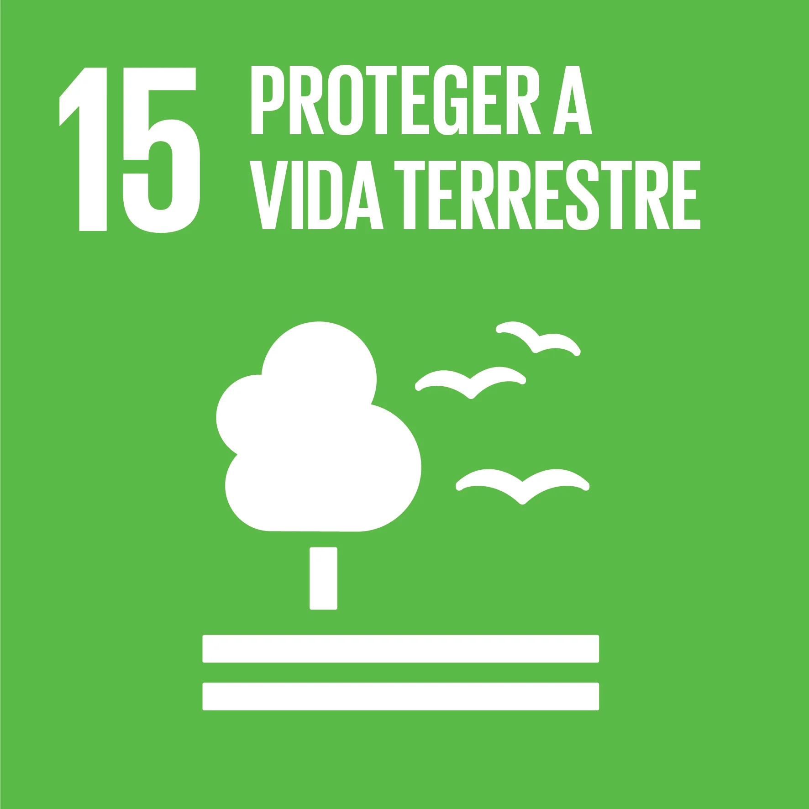
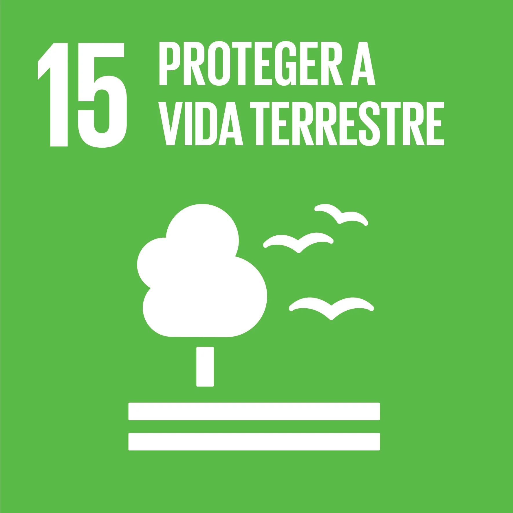

OS ODS
Objetivos de Desenvolvimento Sustentável
O que são as ODS?
As ODS referem-se aos Objetivos de Desenvolvimento Sustentável. As ODS são uma série de 17 objetivos estabelecidos pelas Nações Unidas em 2015 como parte da Agenda 2030 para o Desenvolvimento Sustentável. Esses objetivos foram criados para abordar os desafios sociais, econômicos e ambientais enfrentados em todo o mundo, e têm como objetivo promover a prosperidade e o bem-estar das pessoas, proteger o planeta e garantir a paz e a parceria global.
Um dos 17 Objetivos de Desenvolvimento Sustentável possui metas específicas a serem alcançadas até o ano de 2030. Alguns dos principais objetivos incluem a erradicação da pobreza, a promoção da igualdade de gênero, a garantia da educação de qualidade, o combate às mudanças climáticas, a conservação dos recursos naturais, a promoção da saúde e do bem-estar, entre outros.
As ODS são uma chamada à ação para governos, setor privado, sociedade civil e indivíduos trabalharem juntos em direção a um futuro mais sustentável e equitativo. A implementação dos Objetivos de Desenvolvimento Sustentável requer esforços coordenados em níveis global, nacional e local, e envolve uma ampla gama de atores e iniciativas em todo o mundo. Abaixo do texto você poderá ver um vídeo sobre o que são as ODS de forma clara, e logo em seguida todas os 17 Objetivos de Desenvolvimento Sustentável:


 



O ODS 5(IGUALDADE DE GÊNERO)
ODS 5 é o Objetivo de Desenvolvimento Sustentável das Nações Unidas que trata da Igualdade de Gênero. O objetivo é alcançar a igualdade de gênero e empoderar todas as mulheres e meninas. Ele pede o fim da discriminação (5.1) e da violência (5.2) contra mulheres e meninas
Bem, o primeiro passo para dar uma conclusão a discriminação e violência é: Começar pela educação em geral sendo dentro de casa pelos pais ou responsáveis e reforçada nas escolas, aumentando o suporte seja virtualmente e fisicamente para que essas mulheres caso precisem buscar
ajuda, segundo o Fórum Brasileiro de Segurança Pública (FBSP), 35 mulheres foram agredidas física ou verbalmente por minuto no Brasil em 2022. 28,9% (18,6 milhões), podemos ver que isso é claramente um problema e por isso o próprio governo deveria criar mais propagandas incentivando-as a fazerem denúncias pois muitas das vezes essas mulheres têm medo ou as vezes até vergonha de denunciar esses agressores principalmente as que são menores de idade. Confira abaixo mais dados do (IBGE) sobre a violência contra as mulheres.
Com isso podemos ver que ainda temos muitas coisas para resolver na sociedade como um todo e lembrando que pequenos hábitos fazem a diferença e com educação e respeito podemos sim concluir essas metas para que todos podemos viver em uma sociedade mais inclusiva e acolhedora para todo mundo.
.png)
.png)
Referências
OBJETIVOS de desenvolvimento sustentável: IPEA: instituto de pesquisa econômica aplicada. [S. l.], 2019. Disponível em: https://www.ipea.gov.br/ods/.
CENTRAL DO BRASIL PLANALTO. Ibge (org.). Panorama: Ibge. [S. l.], 28 maio 2023. Disponível em: https://censo2022.ibge.gov.br/panorama/. Acesso em: 31 jul. 2023.
ESTRATÉGIA Ods: Ods 5. [S. l.], 2019. Disponível em: https://www.estrategiaods.org.br/os-ods/ods5/. Acesso em: 31 jul. 2023.
INOVA 7: Laboratório de inovação: Alcançar a igualdade de gênero é o Objetivo de Desenvolvimento Sustentável nº 5 da ONU. [S. l.], 5 nov. 2021. Disponível em: https://www.trt7.jus.br/index.php?option=com_content&view=article&id=4637:alcancar-a-igualdade-de-genero-e-o-objetivo-de-desenvolvimento-sustentavel-n-5-da-onu&catid=261&Itemid=1170. Acesso em: 31 jul. 2023.
ODS 5: Alcançar igualdade de gênero e empoderar todas as mulheres e meninas. Nospodemosparana, [S. l.], p. v. 9 n. 2 (2021), 5 nov. 2021. Disponível em: https://www.fiepr.org.br/nospodemosparana/uploadAddress/ODS_5[71578].pdf.Acesso em: 31 jul. 2023.